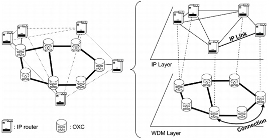

SWIM Overview > IP-over-WDM Networks
IP-over-WDM Networks
In recent years, telecommunications networks have faced an explosive growth in traffic, fueled largely by the popularity of the Internet, and the demand for ever-more bandwidth is likely to continue. TCP/IP is functioning as the convergence layer for nearly all end-user communication in today's communication networks. As a result, networks are increasingly optimized to support IP traffic. This trend is also likely to continue.
Many enterprises and service providers have adopted wavelength-division multiplexing (WDM) technology to support the high bandwidth requirements on multi-service networks. Due to the growing importance of IP traffic and the opportunities offered by WDM technology, current transport networks are evolving into "IP-over-WDM" networks, in which the IP network relies on an underlying WDM network for the required connectivity and capacity. This type of network is based on a set of IP routers combined with a transport network infrastructure. Typically, the transport network consists of SONET/SDH equipment that provides the necessary interconnections between the routers, as illustrated in Figure 1-1.
Figure 1-1 IP-over-WDM Networks: Multi-Layer Network View

You can think of this network as consisting of two conceptual layers–the IP layer and the transport layer—in which each layer relies on its own functionality and protocols. These layers have a client/server relationship: the IP layer relies on the transport layer to provide connectivity between IP routers. IP links rely on transport-layer connections between transport-layer nodes (such as DXCs or OXCs). These nodes are collocated with, and connected to, the IP routers.
| Home © 1987-2007 OPNET Technologies, Inc. All Rights Reserved. This software may be covered by one or more U.S. Patents. See complete patent notice in the Legal Notices section. OPNET Support Center |